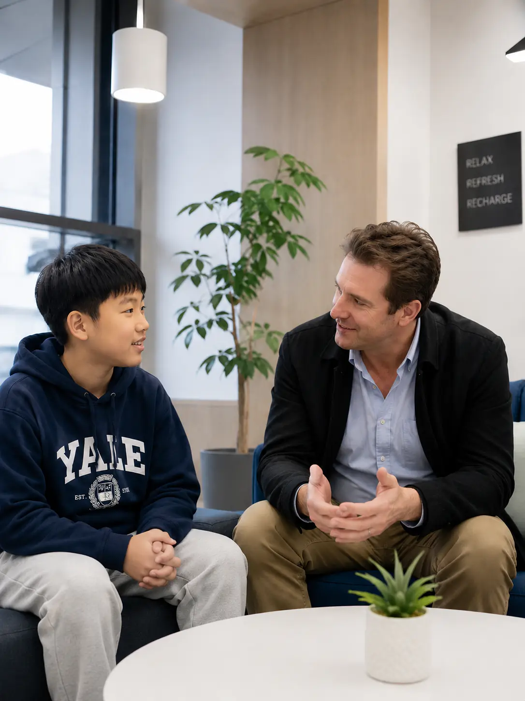
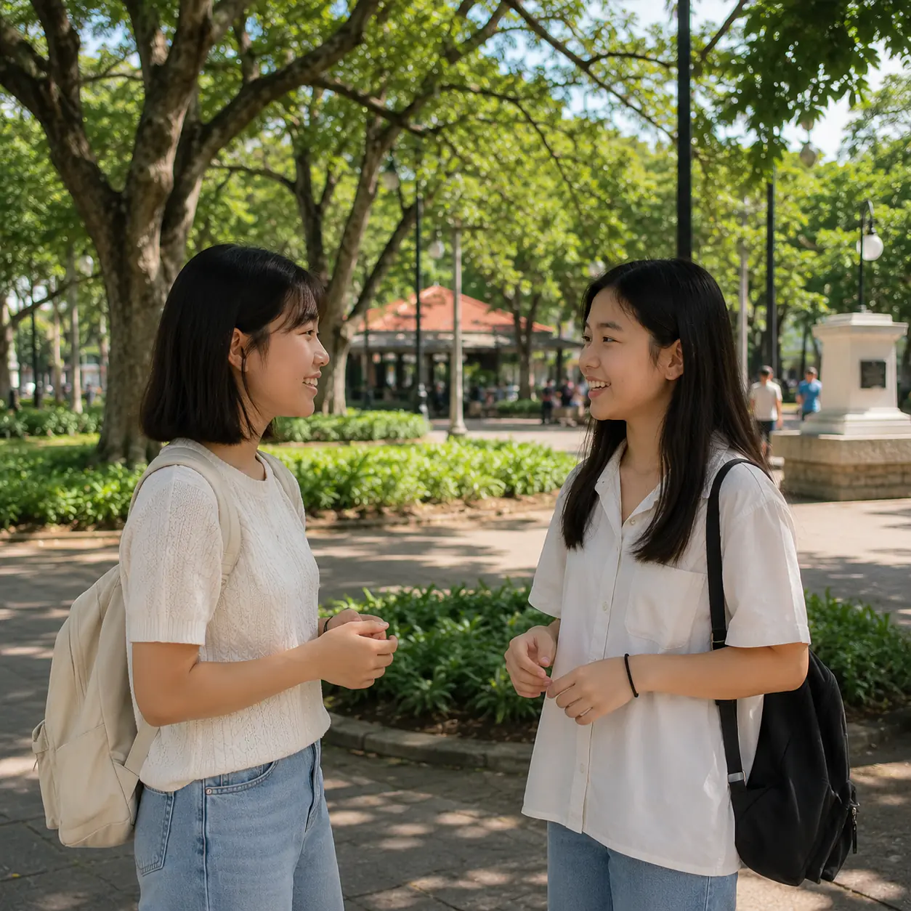

Airport Pickup
Arrival details and the meeting point are confirmed in advance for a smoother transfer to accommodation.
About TSA
From airport arrival to class scheduling, health support, and daily requests, TSA keeps every student connected to help.

CARE JOURNEY
Students and guardians know what happens next from pre-arrival confirmation through campus orientation and daily support.
Review flight information, accommodation, program dates, medical notes, and special requests before departure.
Coordinate the arrival meeting point, pickup contact, transfer, and check-in guidance.
Introduce campus rules, key contacts, safety information, daily routines, and the first schedule.
A dedicated manager follows academic questions, daily-life needs, and requests through completion.
STUDENT SERVICES
Students can reach the right support without having to find a different contact for every issue.
Arrival details and the meeting point are confirmed in advance for a smoother transfer to accommodation.
Requests related to class times, level placement, attendance, and schedule changes are reviewed with the academic team.
Students can receive first-response support and guidance to nearby clinics or hospitals when additional care is needed.
Class, room, meals, facilities, health, and document requests can be submitted through one organized channel.
A consistent contact follows each case, coordinates the responsible team, and checks that the student receives an answer.
On-site staff support student safety and urgent daily-life needs through nights and weekends.
CARE IN DAILY LIFE
Students receive personal consultation, a comfortable place to pause, and a consistent contact who follows each request.



ONLINE REQUESTS
A structured online request channel helps students explain what they need and lets staff manage each request through completion.
Each request is categorized, assigned to the right team, updated, and followed up by the student manager.
SAFETY RESPONSE
When a concern is urgent or involves multiple teams, TSA coordinates the response and keeps the student informed.
Urgent issues are shared immediately with the responsible academic, residence, health, or operations contact.
Students, guardians, and partner agencies can receive key guidance in supported partner languages.
The manager confirms what was handled, checks the student’s condition, and follows unresolved actions.